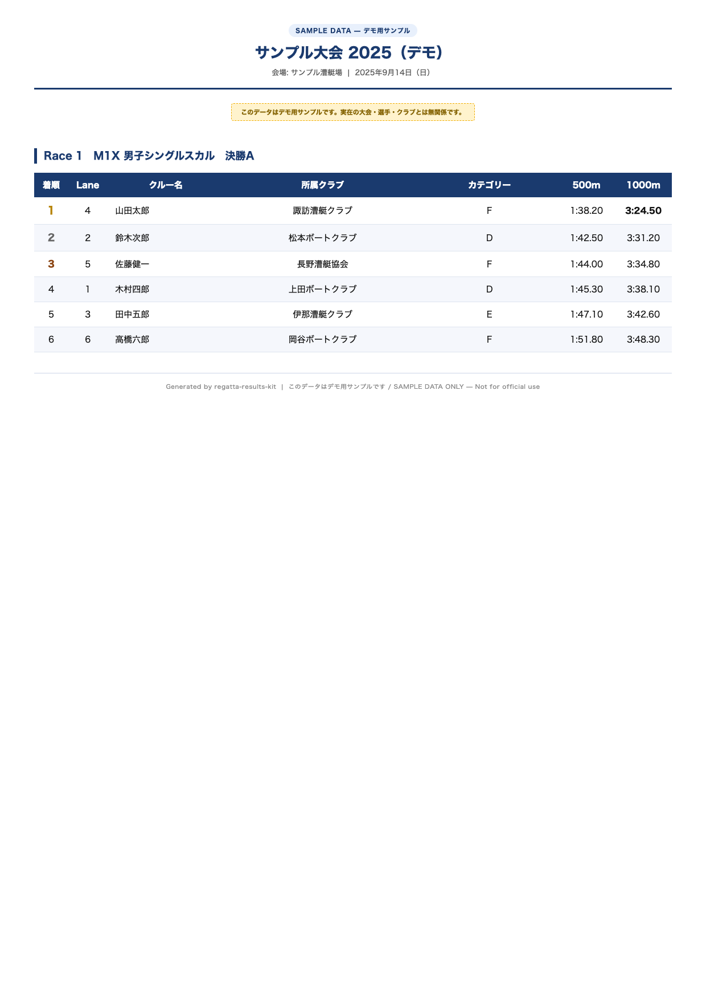

運用ガイド
大会の始め方から年間管理・当日運用まで。 非エンジニアの協会担当者向けに、3つのテーマで全体像をまとめました。
大会の始め方
新規大会のセットアップは全7ステップ。所要時間は50〜70分。 ターミナルやコマンド操作は不要で、ブラウザだけで完結します。
-
1
GitHub テンプレートをコピー
GitHub 上の "Use this template" から自団体のリポジトリを新規作成します。 コードの貼り付けや編集は不要です。
-
2
Cloudflare Pages を接続
Cloudflare Dashboard でリポジトリを選択し、速報サイトの公開先を設定します。 Build output directory は
siteと入力するのが必須の設定です。 -
3
大会初期構築（GitHub Actions）
GitHub の Actions タブから「大会初期構築」ワークフローを実行します。 フォームに5項目を入力するだけで、速報サイトのデータが自動生成されます。
入力項目 例 大会名 第01回○○マスターズレガッタ 会場 ○○漕艇競技場 開始日 2027/06/14 終了日 2027/06/15 メインカラー #1a3a5c -
4
Google Drive フォルダを作成
自団体の Google Drive にルートフォルダを1つ作成します。 内部のサブフォルダは後の手順で自動作成されるため、手動での作業は不要です。
-
5
GAS のコピーを作成してプロパティを設定
Google Apps Script のテンプレートをコピーし、ステップ4のフォルダIDと GitHub リポジトリ名を設定します。コードの入力は不要です。
-
6
GitHub PAT（Personal Access Token）を発行
GAS が GitHub にデータを書き込むための認証トークンを作成し、 GAS のプロパティに貼り付けます。有効期限は90日で、期限切れ後は更新が必要です。
-
7
管理ポータルで初期セットアップ・接続テスト
GAS をウェブアプリとしてデプロイし、管理ポータルを開きます。 Drive 接続テスト、GitHub 接続テストをそれぞれ実行し、 「初期セットアップ実行」で自動更新を稼働させたら導入完了です。
Drive 接続テスト OK GitHub 接続テスト OK 自動更新 稼働中
年間のレース管理
ハブ機能を使うと、協会が年間の複数大会を1ページで一元管理可能です。 大会の追加もステータスの切り替えも、GitHub のフォームを埋めるだけです。
ハブ構造のイメージ
春季マスターズ
○○漕艇競技場
夏季選手権
△△コース
秋季オープン
○○漕艇競技場
2つのワークフローで管理する
大会を追加する
GitHub Actions の「ハブ — 大会追加」ワークフローを実行します。 大会名・日程・会場・速報サイト URL・ステータスの5項目を入力するだけで、 大会一覧に自動追加されます。
hub-add-tournament ワークフローステータスを切り替える
GitHub Actions の「ハブ — ステータス変更」ワークフローを実行します。 大会 ID を入力して新しいステータスを選択するだけで、 ハブページに即座に反映されます。
hub-update-status ワークフロー3つのステータス
| ステータス | ハブでの表示 | 使うタイミング |
|---|---|---|
| 開催予定 | 青いバッジ | 大会を登録した直後から、開催前日まで |
| 速報中 | 赤いバッジ（点滅） | 大会当日・計測 CSV の投入を開始したタイミング |
| 結果確定 | 緑のバッジ | 全種目の結果が確定し、速報更新が完了した後 |
協会主催の大会の運営
大会当日は計測 CSV をフォルダに置くだけ。約2分後に速報が自動公開されます。 成果物の出力・状態確認・大会終了後の処理まで、すべてブラウザで完結します。
当日の操作の流れ
-
CSV を Drive に置く
計測システムから出力した CSV を Google Drive の
race_csv/フォルダに置くだけ -
GAS が自動処理（約2分）
GAS がドライブを定期的にスキャンし、CSV を JSON に変換して GitHub へ Push
-
速報サイトに反映
Cloudflare Pages が自動デプロイ。ブラウザをリロードすると最新タイムが表示される
-
ポータルで状態確認
管理ポータルの「状態」タブで自動更新の稼働状態をいつでも確認できる
自動で出力される3つの成果物
CSV を置くたびに、以下の3つが自動的に生成・更新されます。

成果物 01
速報サイト
リアルタイムで更新される公開ページ。選手・家族・観客がどこからでも閲覧可能です。

成果物 02
掲示用 PDF
会場の掲示板・A4印刷向けに整形された結果一覧 PDF。GAS が自動生成します。

成果物 03
審判用資料
競漕記録・審判員が使用する帳票類。GAS が自動出力します。
管理ポータルで確認する
当日は管理ポータルの「状態」タブを開いておくと、自動更新の稼働状態と接続状況を随時確認可能です。
大会終了後の処理
全種目の結果が確定したら、管理ポータルの「データリセット」で次の大会に向けて初期化可能です。 ハブのステータスを「結果確定」に切り替えることも忘れずに行いましょう。